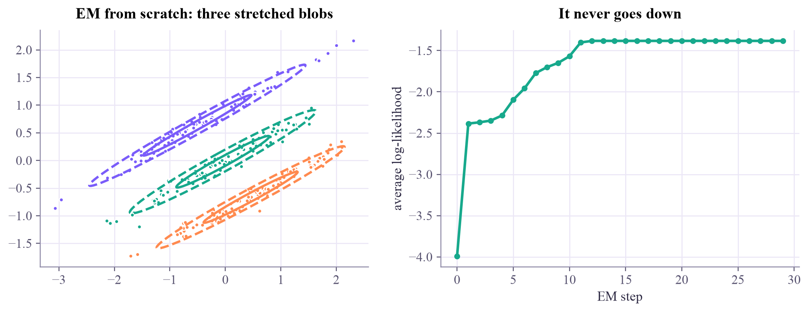
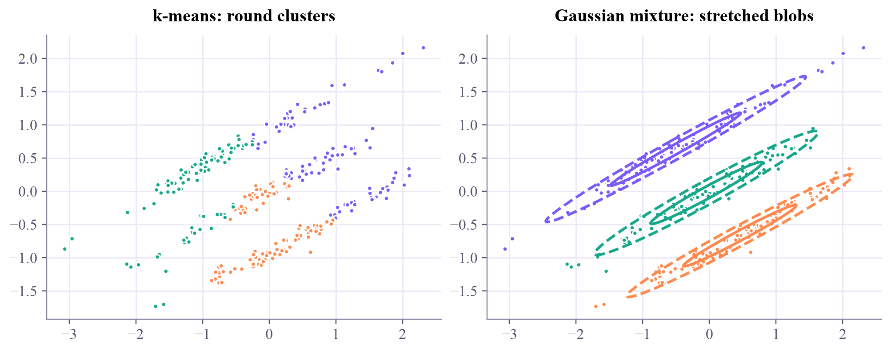
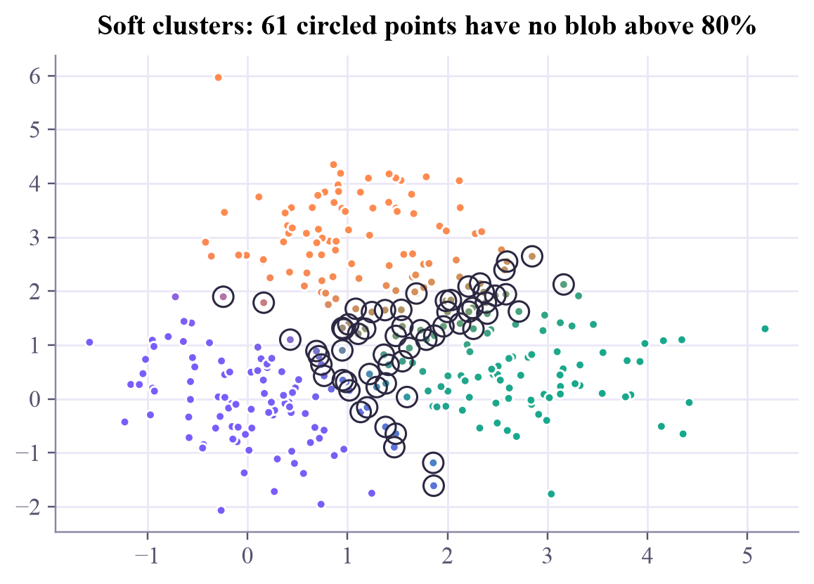
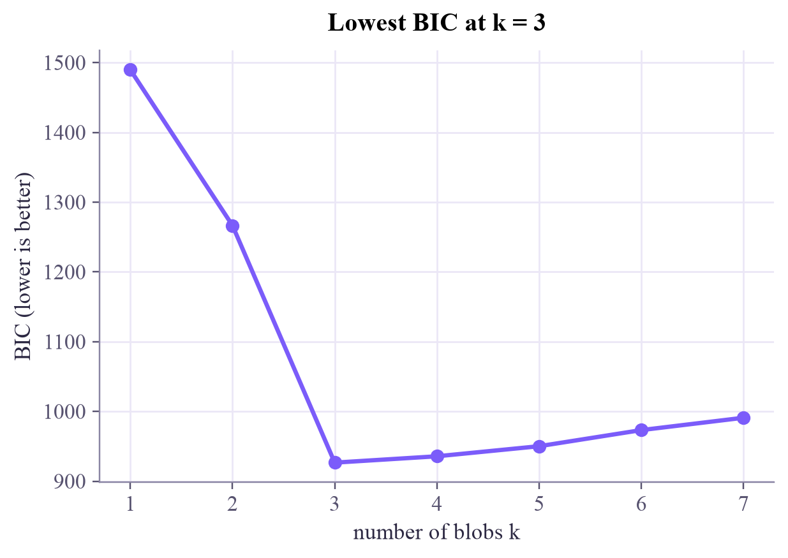

weights: [0.333 0.333 0.333]
Describe the data as a few bell-shaped blobs with their own shapes, and give every point a probability for every blob. EM fits them in two alternating steps.

Yesterday k-means gave every point exactly one cluster, even the points sitting right between two groups, and it could only draw round clusters. Today's model is more honest on both counts: its clusters can stretch and tilt, and a point in between can say "60% this group, 40% that one".
A Gaussian mixture imagines that the data was made like this: pick blob with probability (its weight), then draw a point from that blob's bell curve . The center says where the blob is; the covariance says its shape: round, stretched or tilted. The density of the whole mixture is
EM (expectation–maximization) fits it, alternating two steps like k-means:
Each round can only raise the log-likelihood , how plausible the data is under the model. Like k-means, EM can settle in a local maximum, so starts matter: several starts, keep the best.
k-means is the special case where every blob is round and the same size, and the memberships are rounded to 0 or 1.
How many blobs? More blobs always fit better, so we penalize complexity. The BIC (Bayesian information criterion) is plus for every parameter. Choose the with the lowest BIC.
A Gaussian mixture is k-means with honest uncertainty and flexible shapes: E-step "who probably owns this point?", M-step "refit each blob", repeat.
The stripes that fooled k-means yesterday. Press E-step and M-step in turn, or Play. Solid ellipses are one standard deviation, dashed ones two. Circled points are unsure: no blob above 80%.
Watch the round starting blobs stretch into the stripes. Press New start a few times: quite often EM settles with two blobs sharing a stripe, a local maximum with a lower log-likelihood. Then try the overlapping blobs: many points stay unsure, and that's the honest answer.
ml-w6d2.ipynb. To change the code and run it yourself, open the notebook in Google Colab (free, in your browser) or download it for your own Jupyter.import numpy as np
import matplotlib.pyplot as plt
from scipy.stats import multivariate_normal
from matplotlib.patches import Ellipse
rng = np.random.default_rng(0)
# three long, thin stripes: the data k-means got wrong yesterday
direction, normal = np.array([np.cos(0.5), np.sin(0.5)]), np.array([-np.sin(0.5), np.cos(0.5)])
t = rng.normal(0, 1.0, 300)
u = rng.normal(0, 0.08, 300) + np.repeat([-0.8, 0.0, 0.8], 100)
X = t[:, None] * direction + u[:, None] * normal
def em(X, k, steps=30, seed=5):
rng = np.random.default_rng(seed)
means = X[rng.choice(len(X), k, replace=False)]
covs = np.array([np.eye(2) * 0.35] * k)
weights = np.full(k, 1 / k)
history = []
for _ in range(steps):
# E-step: responsibilities r[i, j] = P(blob j | point i), by Bayes' rule
dens = np.column_stack([w * multivariate_normal(m, c).pdf(X) for w, m, c in zip(weights, means, covs)])
history.append(np.log(dens.sum(axis=1)).mean()) # average log-likelihood
r = dens / dens.sum(axis=1, keepdims=True)
# M-step: weighted counts, means and covariances
n = r.sum(axis=0)
weights = n / len(X)
means = (r.T @ X) / n[:, None]
covs = np.array([((r[:, j, None] * (X - means[j])).T @ (X - means[j])) / n[j] + 1e-6 * np.eye(2)
for j in range(k)])
return weights, means, covs, r, history
weights, means, covs, r, history = em(X, 3)
palette = np.array([[0.48, 0.36, 0.98], [0.09, 0.66, 0.55], [1.0, 0.54, 0.31]])
def draw_ellipses(ax, means, covs):
for j, (m, c) in enumerate(zip(means, covs)):
vals, vecs = np.linalg.eigh(c)
angle = np.degrees(np.arctan2(vecs[1, 1], vecs[0, 1]))
for s, ls in [(2, "-"), (4, "--")]: # 1 and 2 standard deviations (width = 2 sd)
ax.add_patch(Ellipse(m, s * np.sqrt(vals[1]), s * np.sqrt(vals[0]), angle=angle,
fill=False, ec=palette[j], lw=2, ls=ls))
fig, (ax1, ax2) = plt.subplots(1, 2, figsize=(9.5, 3.6), layout="constrained")
ax1.scatter(X[:, 0], X[:, 1], c=r @ palette, s=12)
draw_ellipses(ax1, means, covs)
ax1.set_aspect("equal")
ax1.set_title("EM from scratch: three stretched blobs")
ax2.plot(history, "o-", ms=4, color="#17a98c")
ax2.set_xlabel("EM step")
ax2.set_ylabel("average log-likelihood")
ax2.set_title("It never goes down")
plt.show()
print("weights:", weights.round(3))
weights: [0.333 0.333 0.333]
from sklearn.mixture import GaussianMixture
from sklearn.cluster import KMeans
# start from random data points: the default start (k-means' own answer) can inherit k-means' mistake here
gmm = GaussianMixture(n_components=3, covariance_type="full", init_params="random_from_data",
n_init=10, random_state=0).fit(X)
km = KMeans(n_clusters=3, n_init=10, random_state=0).fit(X)
fig, axes = plt.subplots(1, 2, figsize=(9, 3.4), layout="constrained")
for ax, labels, title in [(axes[0], km.labels_, "k-means: round clusters"), (axes[1], gmm.predict(X), "Gaussian mixture: stretched blobs")]:
ax.scatter(X[:, 0], X[:, 1], c=palette[labels], s=12)
ax.set_aspect("equal")
ax.set_title(title)
draw_ellipses(axes[1], gmm.means_, gmm.covariances_)
plt.show()
from sklearn.datasets import make_blobs
X2, _ = make_blobs(n_samples=300, centers=[(0, 0), (2.6, 0.6), (1.1, 2.6)], cluster_std=0.85, random_state=1)
gmm2 = GaussianMixture(n_components=3, random_state=0).fit(X2)
membership = gmm2.predict_proba(X2) # one row per point, one column per blob
unsure = membership.max(axis=1) < 0.8
plt.scatter(X2[:, 0], X2[:, 1], c=membership @ palette, s=18)
plt.scatter(X2[unsure, 0], X2[unsure, 1], s=90, facecolors="none", edgecolors="#2c2842", linewidths=1)
plt.title(f"Soft clusters: {unsure.sum()} circled points have no blob above 80%")
plt.show()
print("a confident point:", membership[np.argmax(membership.max(axis=1))].round(3))
print("an unsure point :", membership[np.argmin(membership.max(axis=1))].round(3))
a confident point: [0. 0. 1.] an unsure point : [0.354 0.421 0.225]
ks = range(1, 8)
bics = [GaussianMixture(n_components=k, init_params="random_from_data", n_init=10, random_state=0).fit(X).bic(X)
for k in ks]
plt.plot(ks, bics, "o-", color="#7b5cfa")
plt.xlabel("number of blobs k")
plt.ylabel("BIC (lower is better)")
plt.title(f"Lowest BIC at k = {int(np.argmin(bics)) + 1}")
plt.show()
Write the E-step: given weights, means and covariances, compute every point's probabilities. Check your answer against scikit-learn's predict_proba.
def responsibilities(X, weights, means, covs):
# TODO: one column per blob: weight * multivariate_normal(mean, cov).pdf(X)
# TODO: divide every row by its sum
return np.full((len(X), len(weights)), 1 / len(weights))
mine = responsibilities(X2, gmm2.weights_, gmm2.means_, gmm2.covariances_)
print("rows sum to 1:", np.allclose(mine.sum(axis=1), 1))
print("matches scikit-learn:", np.allclose(mine, gmm2.predict_proba(X2), atol=1e-6))multivariate_normal(m, c).pdf(X) gives one bell-curve value per point. Stack one column per blob with np.column_stack, multiply by the weights, and divide by the row sums (keepdims=True keeps the shapes compatible).
def responsibilities(X, weights, means, covs):
dens = np.column_stack([w * multivariate_normal(m, c).pdf(X) for w, m, c in zip(weights, means, covs)])
return dens / dens.sum(axis=1, keepdims=True)
mine = responsibilities(X2, gmm2.weights_, gmm2.means_, gmm2.covariances_)
print("rows sum to 1:", np.allclose(mine.sum(axis=1), 1))
print("matches scikit-learn:", np.allclose(mine, gmm2.predict_proba(X2), atol=1e-6))
print("That's Bayes' rule: prior (the weight) times likelihood (the bell curve), normalized.")rows sum to 1: True matches scikit-learn: True That's Bayes' rule: prior (the weight) times likelihood (the bell curve), normalized.
A mixture says "with probability , the point came from blob ". A mixed quantum state says "with probability , the qubit is in state ", and a density matrix is exactly that kind of weighted sum. The Quantum Computing tutorial meets mixed states and density matrices this very week.
Mitchell's Machine Learning, section 6.12 ("The EM algorithm"), starts with estimating the means of Gaussians, just like today. Bishop's Pattern Recognition and Machine Learning, chapter 9, is the classic full treatment of mixtures and EM.
Next in Machine Learning: PCA, the best low-dimensional view of your data.

Tap the button to save it. Short and steady wins.
Marked by mistake? Undo